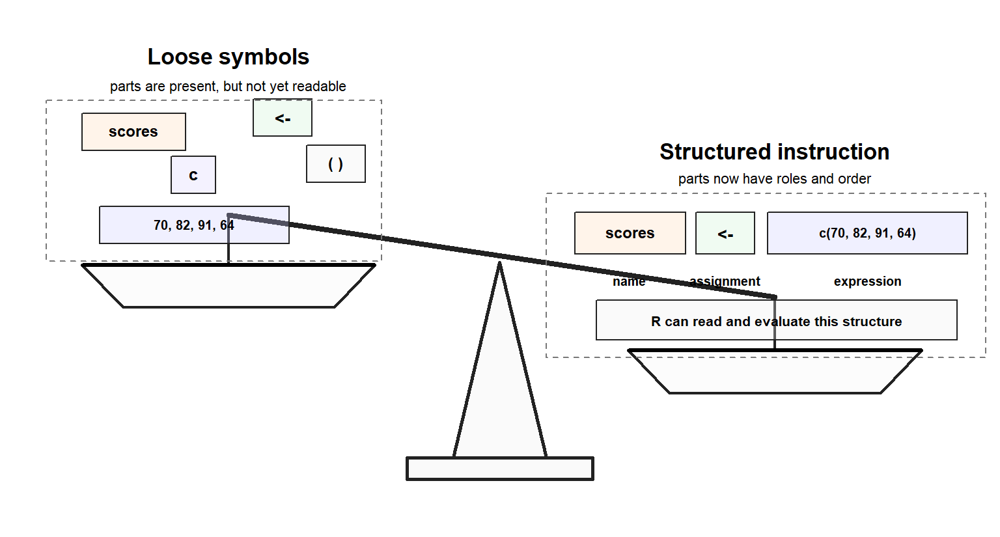

Code
scores <- c(70, 82, 91, 64)Leo has just learned something important about data.
Data is not a pile of loose values. It has structure. A vector holds values in one disciplined line. A matrix arranges values across rows and columns. A list can carry different kinds of objects together. A data frame gives research data a table-like shape, where each column has its own responsibility and each row carries an observation.
By the end of Chapter 5, Leo no longer sees data as scattered pieces. He sees arrangement.
Then he opens R again and looks at a line of code:
scores <- c(70, 82, 91, 64)At first, it looks like a small crowd of symbols.
There is a name: scores.
There is an arrow: <-.
There is a letter: c.
There are parentheses, commas, and numbers.
A beginner might see punctuation. A tired learner might see something to memorise. Leo, however, has started noticing structure. He pauses long enough to ask a better question:
What if code also has arrangement?
The line is not random. It has order. It has direction. It has meaning. R is being told what to create, where to store it, and what name to use when Leo wants it again.
This is the doorway into Part 2.
Chapter 5 showed that data has structure. Chapter 6 shows that code has structure too.
That structure is syntax.
Syntax is not decoration. It is not punctuation sprinkled around the real work. Syntax is meaning arranged so R can evaluate it.
Once Leo sees this, R begins to change shape in his mind. It is no longer a wall of strange marks. It becomes a language with grammar.
And grammar can be learned.
In this chapter, Leo learns how R reads code as structured meaning. By the end, he should be able to:
This chapter does not teach functions, pipes, or tidyverse workflows as full topics. Those deeper lessons come later. Here, they appear only as examples that help Leo see the grammar of R code.
Before Chapter 5, Leo knew that R could hold values. After Chapter 5, he understood that values do not float around without form. They are placed into structures.
A single value can stand alone. Several values can form a vector. Values can be arranged into a matrix. Different objects can be gathered inside a list. Variables can be held together in a data frame.
This was a major shift. Leo moved from asking, “What are these values?” to asking, “How are these values being held?”
Now another question appears.
If data has structure, what about the code that creates, stores, and transforms that data?
This question matters because R is not built from loose symbols any more than a dataset is built from loose values. R code also has arrangement. That arrangement tells R where a value begins, where an action begins, where an input belongs, and where a result should be stored.
Leo begins to realize that the next challenge is not memorizing more commands. The next challenge is learning how R understands what he writes.
That is the work of syntax.
Syntax is the arrangement that lets R understand an instruction.
Data structures organise values. Syntax organises code.
Part 1 helped Leo see what R works with: values, types, and structures. Part 2 begins with a different kind of structure.
Code also has parts. A name, an operator, a function name, a parenthesis, or a comma may look small on its own. But R does not read intention from isolated symbols. R reads arranged instruction.
The figure below shows the difference between loose symbols and arranged code.

As shown in Figure fig-code-as-structured-instruction, the loose symbols on the left are not useless. They are simply not yet arranged into a readable instruction. On the right, the same kind of pieces now have order and roles: scores is the name, <- assigns the result, and c(70, 82, 91, 64) creates the values that will be stored.
The figure is not saying that code becomes correct just because it looks neat. It is making a smaller point: syntax gives code a structure R can read. The rest of this chapter explains how that structure works.
R is a programming language, but that phrase can sound distant when a learner is still trying to understand the Console.
The language comparison is useful, but it has limits. R is not a natural language like English, Yoruba, French, or Swahili. Natural languages tolerate context, gesture, ambiguity, and incomplete meaning. R does not. R is a formal computer language. A broken expression cannot be rescued by good intentions.
For Leo, the useful point is simple: R understands code because code follows patterns. A line of R is not a loose collection of marks. It is an arrangement of values, names, operators, function calls, and storage instructions.
Mathematical notation gives Leo a familiar clue. The expression 10 + 5 is understood because the symbols follow a pattern. The + sign sits between two values and tells R what operation to perform.
R also reads through structure and pattern.
When Leo writes:
10 + 5
#> [1] 15R does not see disconnected symbols. It sees a valid expression. It knows that + is being used to add two values.
When Leo writes:
result <- 10 + 5R sees an assignment. It evaluates the expression on the right side, then stores the result in the name on the left side.
Each part has a role in the structure.
10 is a value.
+ is an operator.
10 + 5 is an expression.
<- performs assignment.
result is a name Leo can use again.
R code is structured meaning.
Leo does not need to memorise every command before he can begin reading code. He first needs to see the structure that tells R how to read, evaluate, store, and connect each part.
R does not guess what Leo meant. It evaluates what Leo wrote. That is why syntax matters.
Leo is not merely learning symbols. He is learning how R reads.
Many R instructions contain expressions. An expression is a piece of R code that R can evaluate to produce a value.
Evaluation means that R reads the expression, works out its value, and returns a result.
This definition is short, but it carries a lot of weight. Leo should not ask first whether a line looks familiar or whether he can translate it into ordinary words. The first question is more precise:
Can R evaluate this?If R can evaluate it and return a value, Leo is looking at an expression.
The simplest expression can be a single value:
10
#> [1] 10R evaluates the expression and returns the value 10.
Because the expression is not assigned, R also prints the result in the Console.
A slightly richer expression can be a calculation:
10 + 5
#> [1] 15R evaluates the expression and returns the result.
Because the result is not assigned to a name, R prints it immediately in the Console.
A function call can also be an expression:
mean(c(70, 82, 91, 64))
#> [1] 76.75This line may look more complex, but the idea is the same. R evaluates the code and returns a value.
The important point is that R code is not only a command shouted at the computer. Much of R code is made of expressions, and expressions produce values.
That changes how Leo reads.
Instead of asking only, “What command is this?” he begins to ask, “What value is R trying to produce here?”
That question will help him for the rest of the book.
This distinction is small enough to miss and important enough to slow down for.
An expression produces a value.
An assignment stores a value.
These two lines are related, but they do not do exactly the same thing:
10 + 5
#> [1] 15result <- 10 + 5In the first line, R evaluates 10 + 5 and prints the result because Leo has not asked R to store it.
In the second line, R still evaluates 10 + 5, but the assignment changes what happens next. The result is stored under the name result.
So the expression is this part:
10 + 5The assignment is the full storage pattern:
result <- 10 + 5Leo can think of it this way:
expression: produce a value
assignment: store the produced value in a nameThis difference explains why some code prints immediately and some code quietly saves a result for later.
It also protects Leo from a common misunderstanding. Assignment is not calculation by itself. Assignment is what happens after evaluation, when R gives the result a name.
Leo types a simple expression:
10 + 5
#> [1] 15R prints the result because there is no assignment.
Then he types another expression:
mean(c(70, 82, 91, 64))
#> [1] 76.75Again, R prints the result.
Now Leo writes:
score_mean <- mean(c(70, 82, 91, 64))This time, nothing appears immediately.
For many beginners, this moment is confusing. The code ran, but the screen seems quiet.
But the result did not disappear. R evaluated the expression on the right and stored the answer under the name score_mean.
Leo can ask for it by typing the name:
score_mean
#> [1] 76.75If an expression is not assigned, R usually prints the result. If it is assigned, R stores the result.
Quiet code is not always inactive code. Sometimes R has done the work and saved the answer for later.
This helps Leo understand why R sometimes prints and sometimes stays silent. R is not being inconsistent. The syntax has changed.
Assignment is one of the most important structures in R.
Leo writes:
result <- 10This means:
take the value 10 and store it under the name resultThe arrow points toward the name that R will use for the result.
The name is not the data itself. The name points to the stored result. This matters because Leo will soon work with objects much larger than one number.
For example:
scores <- c(70, 82, 91, 64)Here, R evaluates the right side first. The expression c(70, 82, 91, 64) creates a vector. Then R stores that vector under the name scores.
Later, Leo can use the name instead of rewriting the whole vector:
avg_score <- mean(scores)The assignment pattern is stable:
name <- expressionLeo can read it like this:
store the evaluated result of expression inside nameThat sentence is worth keeping close. It stops assignment from looking like a strange arrow and turns it into a readable structure.
avg_score <- mean(scores) means R should evaluate mean(scores) and store the result using the name avg_score.
The arrow is not decoration. It is direction.
Leo now returns to a small block of code:
scores <- c(70, 82, 91, 64)
avg_score <- mean(scores)
avg_score
#> [1] 76.75The second line is the one that matters most here:
avg_score <- mean(scores)Leo can read it as a plain instruction:
Put the mean of scores into avg_score.Or more carefully:
scores is the input object;mean() is the action;mean(scores) is the expression to evaluate;<- stores the result;avg_score is the name that receives the result.The pattern helps him see roles without pretending that every line of code must be translated word for word.
A useful beginner reading pattern is:
name <- action(input)In this case:
avg_score <- mean(scores)means:
store the result of applying mean() to scores inside avg_scoreR is strict, but it is not random.
Leo is no longer staring at symbols. He is reading a structured line.
Operators also depend on structure.
This expression works because the + operator has a value on both sides:
score <- 82
score + 5
#> [1] 87This does not form a complete expression:
score +
# Error: unexpected end of inputThe problem is not that score is wrong. The problem is that the operator is waiting for the other side of the expression.
The same idea will matter in Chapter 7. A comparison such as this also has structure:
score > 80
#> [1] TRUEThere is a name, an operator, and a value. This line asks R to make a judgment. Chapter 7 will teach that kind of judgment properly. For now, the syntax lesson is enough: an operator usually needs complete material around it.
A function call has a recognizable structure:
function_name(argument)The function name tells R what action to use. The parentheses create the call. The argument supplies the input.
For example:
mean(scores)
#> [1] 76.75Here, mean is the function name. The object scores is the argument. The whole expression asks R to calculate the mean of the values stored in scores.
Another example:
round(82.567, 2)
#> [1] 82.57Here:
round is the function name;82.567 is the value to round;2 tells R how many decimal places to keep.The comma separates arguments. It tells R that the function is receiving more than one piece of information.
This structure matters because R is strict. It does not understand intentions that are not expressed through correct syntax.
This works:
mean(scores)
#> [1] 76.75This does not work:
mean scores
#> Error in parse(text = input): <text>:1:6: unexpected symbol
#> 1: mean scores
#> ^A human may understand the intention: “calculate the mean of scores.”
R evaluates the structure that Leo writes.
The missing parentheses change the meaning completely. Without them, R does not see a proper function call.
Leo learns a practical rule:
A function needs its call structure.In R, that usually means a function name followed by parentheses.
Many beginners see parentheses as punctuation. In R, parentheses often define where an action begins and ends.
Compare this:
mean(scores)
#> [1] 76.75with this:
meanThe first line calls the function. It tells R to use mean() on the object scores.
The second line refers to the function object itself. It does not supply input. It does not ask R to calculate the mean of anything.
For a beginner, this distinction can be surprising. Leo expected mean to do something by itself.
R disagrees.
R needs the call structure:
mean(scores)That structure says:
use the function named mean on the object named scoresThe parentheses complete the function call structure.
Without them, Leo may be pointing at a tool. With them, he is using the tool.
Leo now wants to understand what R is doing behind the screen.
When he writes:
scores <- c(70, 82, 91, 64)R does not begin by storing an empty name. It begins by evaluating the right side.
First, R sees:
c(70, 82, 91, 64)
#> [1] 70 82 91 64That expression creates a vector.
Then R stores the vector under the name scores.
Now, when Leo writes:
mean(scores)
#> [1] 76.75R looks for an object named scores. If it finds that object, it passes the values into mean() and returns the result.
This is why some errors become easier to understand when Leo thinks in terms of evaluation.
For example:
mean(missing_score)
#> Error: object 'missing_score' not foundThe syntax of the function call is fine. There is a function name, parentheses, and an argument.
The problem is different.
No object named missing_score has been created.
So R looks for missing_score and cannot find it.
That is not a statistics problem. It is a naming problem.
Not every error means Leo has misunderstood the analysis. Sometimes R is simply saying, “I cannot find the object you named.”
Learning syntax helps Leo separate those problems.
He can ask:
These questions do more than fix errors. They build confidence.
Now Leo meets a line that looks more crowded:
round(mean(c(70, 82, 91, 64)), 2)
#> [1] 76.75At first, the line seems to ask for too much at once. But it follows a simple rule:
R evaluates nested expressions from the inside outward.
When one expression sits inside another expression, R works through the inner expression first, then carries the result outward.
The order is:
c(70, 82, 91, 64)mean(...)round(...)First, R creates the vector:
c(70, 82, 91, 64)
#> [1] 70 82 91 64Then R calculates the mean:
mean(c(70, 82, 91, 64))
#> [1] 76.75Then R rounds the result:
round(mean(c(70, 82, 91, 64)), 2)
#> [1] 76.75Leo can write the same logic in separate lines:
scores <- c(70, 82, 91, 64)
avg_score <- mean(scores)
rounded_avg <- round(avg_score, 2)
rounded_avg
#> [1] 76.75Both versions can produce the same result.
The nested version is shorter. The step-by-step version is easier to inspect.
A professional does not always choose the shortest code. A professional chooses code that is clear enough to trust.
That sentence matters. Leo is not learning R to impress the Console with compact lines. He is learning R to produce work that can be read, checked, repaired, and repeated.
Nested code often confuses beginners because humans and R do not always read in the same order.
Leo sees this:
round(mean(c(70, 82, 91, 64)), 2)
#> [1] 76.75His eyes naturally move from left to right. He sees round() first because it appears first.
But R must evaluate the innermost part first.
That mismatch creates confusion. Leo’s eyes begin outside. R begins inside.
A helpful practice is to make the layers visible:
round(
mean(
c(70, 82, 91, 64)
),
2
)Now the structure is easier to see.
The innermost expression creates the values:
c(70, 82, 91, 64)The middle expression calculates the mean:
mean(...)The outer expression rounds the final result:
round(..., 2)This does not change what R evaluates. It changes what Leo can see.
Readable formatting is not cosmetic. It is part of understanding.
Code is not only for R. Code must also remain readable to the human who returns to it later, whether that is Leo, a collaborator, or a future reviewer.
Clear code is a gift to that future reader.
A common beginner mistake is to copy code that works without reading its grammar.
When the code works, the learner moves on. When the code breaks, there is no structure to inspect.
Consider this line:
round(mean(scores), 2)
#> [1] 76.75A beginner may copy it because it works. Leo is learning to do something better. He is learning to read it.
He can ask:
The answers turn the line into language.
mean(scores) is evaluated first.
The result of mean(scores) is passed into round().
The value 2 tells round() how many decimal places to keep.
Each part has a role in the evaluation.
This is how Leo begins to move from copying code to understanding code. He may still copy examples while learning, but he now reads their structure.
He reads before he runs.
Create a vector of project scores:
project_scores <- c(72, 85, 90, 68, 77)Now calculate the mean:
mean(project_scores)
#> [1] 78.4Before running the next line, predict which part R evaluates first.
Then round the mean to one decimal place:
round(mean(project_scores), 1)
#> [1] 78.4Now rewrite the nested version as separate steps:
project_scores <- c(72, 85, 90, 68, 77)
avg_project_score <- mean(project_scores)
rounded_project_score <- round(avg_project_score, 1)
rounded_project_score
#> [1] 78.4Pause before moving on.
Which version is easier to read?
Which version is shorter?
Which version makes the order of work most visible?
There is no single answer for all situations. The point is to notice structure. Sometimes compact code is clear. Sometimes step-by-step code is safer. Leo’s task is to understand the grammar beneath both.
Leo began this chapter seeing code as a possible pile of symbols. He now sees structure.
Syntax arranges names, values, operators, functions, and punctuation so R can evaluate an instruction. Expressions produce values. Assignment stores evaluated results. Error messages often point to where the structure breaks.
The central idea is simple:
R evaluates expressions, and syntax tells R how those expressions are structured.Syntax is not punctuation. Syntax is meaning arranged so R can evaluate it.
Leo writes:
I used to see R code as symbols I had to memorise. Now I see that each line has a structure. If I can find the expression, the assignment, the function call, and the input, I can read the line before I panic.
He pauses, then adds one more note:
Nested code is not harder because R is mysterious. It is harder because my eyes read from the outside, while R evaluates from the inside. When the line becomes crowded, I can rewrite it as clearer steps.
That insight will save him many hours later.
When a line becomes confusing, Leo does not need to panic. He can slow it down. He can find the innermost expression. He can name the result. He can rewrite the line as steps.
This is not weakness. This is how careful analysts work.
Syntax
The rules that define how R code must be written so R can understand and evaluate it.
Expression
A piece of code that R can evaluate to produce a value.
Evaluation
The process by which R reads an expression, works out its value, and returns a result.
Assignment
The act of storing the evaluated result of an expression in a named object.
Operator
A symbol that tells R to perform an operation on one or more values.
Function call
The use of a function name with parentheses and arguments to perform an action.
Argument
An input supplied to a function.
Nested expression
An expression placed inside another expression.
Inside-out rule
The principle that R evaluates inner expressions before outer expressions.
By the end of this chapter, Leo can:
Leo now knows that R code has grammar.
He can see the shape of a line. He can identify an expression. He can understand assignment. He can read a function call. He can slow down nested code and trace how R works from the inside outward.
But grammar alone is not enough.
A sentence can be well formed and still need a decision. A research dataset can be neatly structured and still require judgment: Which values count? Which rows qualify? Which learners completed the task? Which scores are above the threshold? Which cases should be kept, compared, or filtered?
That is where logic enters.
In the next chapter, Leo will meet the decision-making side of R. He will learn how TRUE and FALSE help R represent answers to questions. He will see how arithmetic operators calculate, how comparison operators test relationships, and how logical operators combine conditions. He will also learn why <-, =, and == do not mean the same thing, even though they look close enough to confuse almost every beginner at least once.
Chapter 6 has shown Leo how R reads structured meaning.
Chapter 7 will show him how R begins to judge.